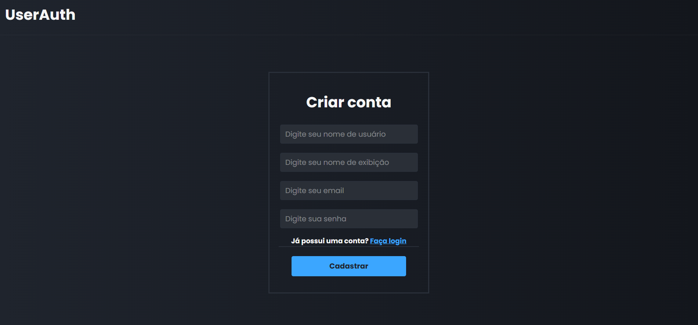
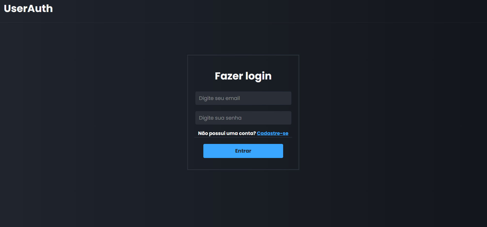
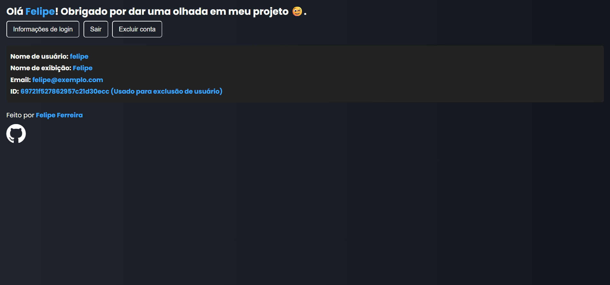

Para a criação deste projeto foi utilizado React, styled-components, Javascript, Node.JS, MongoDB, Mongoose e Git. Para o servidor, usei Express para criar uma API Rest e definir rotas de autenticação de usuários. MongoDB foi usado como banco de dados NOSQL para armazenar os dados dos usuários cadastrados. Usei o Mongoose para fazer a conexão com o banco de dados e seu gerenciamento de forma simples. Para não deixar o URI exposto, usei dotenv para não ficar hardcoded no código. Para a estilização, usei styled-components, sendo a minha primeira experiência com a biblioteca.
  